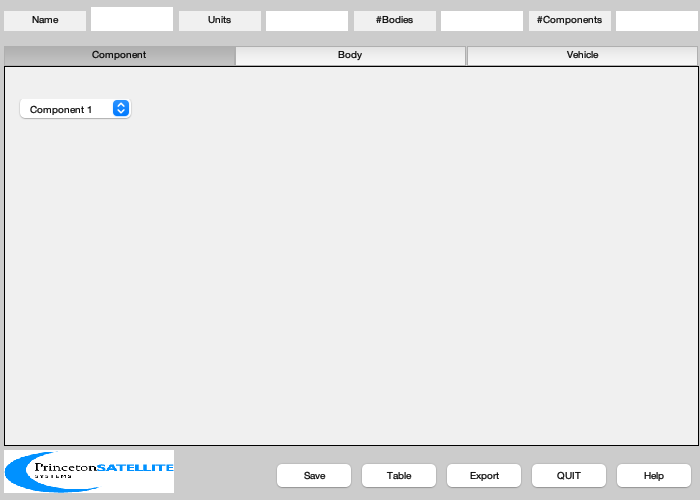
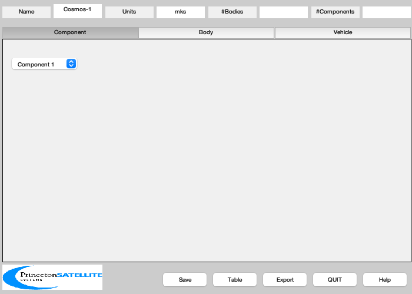
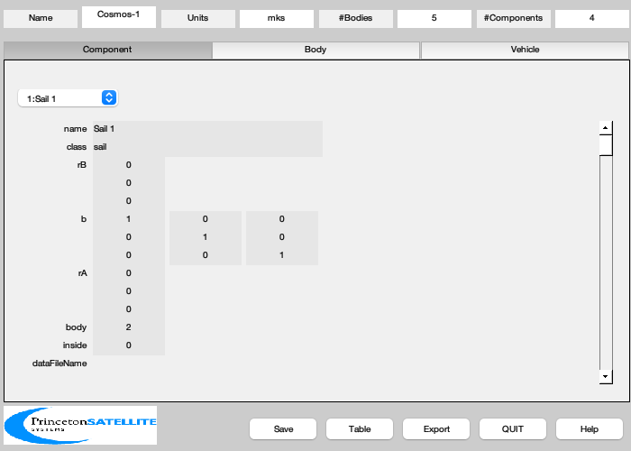
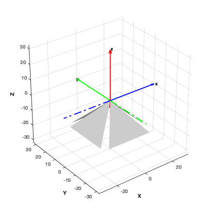

Cone sail model
Since version 7.
------------------------------------------------------------------------
See also BuildCADModel, CreateBody, CreateComponent, DrawSCPlanPlugIn,
Eul2Mat, FindDirectory, SaveStructure, AddAxes, Centroid
------------------------------------------------------------------------
Contents
density = 0.01;
apex = pi/3;
area = 1500;
massPayload = 40;
quad = area/4;
L = sqrt(2*quad/sin(apex));
h = L*cos(apex/2);
y = L*sin(apex/2);
v = [0 0 0; h -y 0; h y 0]';
f = [1 2 3];
Initialize
BuildCADModel( 'initialize' );

Add spacecraft properties
BuildCADModel( 'set name' , 'Cosmos-1' );
BuildCADModel( 'set units', 'mks' );

Bus
hubBody = 1;
m = CreateBody( 'make', 'name', 'Bus' );
BuildCADModel('add body', m );
Rotating sail bodies - define body to core frame.
coneAngle = pi/4;
vaneBody = 2:5;
axisRot = [[0;1;0], [1;0;0], [0;-1;0], [-1;0;0]];
for k = 1:4
hinge.axis = -axisRot(:,k);
hinge.angle = coneAngle;
m = CreateBody( 'make', 'name', ['Vane ' num2str(k)], 'previousBody', 1, ...
'rHinge', [0;0;0], 'bHinge', hinge);
BuildCADModel('add body', m );
end
This creates the connections between the bodies
BuildCADModel( 'compute paths' );
mVane = quad*density;
lVane = h;
hSail = y;
ISail = mVane*diag([1/72*(4*lVane^2+3*hSail^2) 1/18*lVane^2 1/24*hSail^2]);
angle = [0 1 2 3]*pi/2;
for k = 1:4
cMSail = Centroid(v);
b = Eul2Mat( [0;0;angle(k)] );
m = CreateComponent( 'make', 'sail', 'faceColor', 'mirror',...
'rA',[0;0;0],'b',b,...
'vertex', v', 'face', [1 2 3],...
'inside',0,...
'mass', mVane, 'cM', cMSail,'inertia',ISail,...
'sigmaS', [0.9 0.85], 'sigmaD', [0.1 0.15], 'sigmaA',[0 0],...
'emissivity',[0.02 0.02],...
'name', sprintf('Sail %i', k), 'body', vaneBody(k) );
BuildCADModel( 'add component', m );
end

Export
g = BuildCADModel( 'get cad model' );
c = cd;
cd(FindDirectory('SailData'));
SaveStructure( g, 'ConeSail' );
cd(c);
3D View
DrawSCPlanPlugIn('initialize',g);
AddAxes(1.1*g.radius,[],[],gcf)
light('position',[0 0 1])
ans =
Figure (6: 3D Vehicle Plan) with properties:
Number: 6
Name: '3D Vehicle Plan'
Color: [1 1 1]
Position: [500 470 460 460]
Units: 'pixels'
Use GET to show all properties
